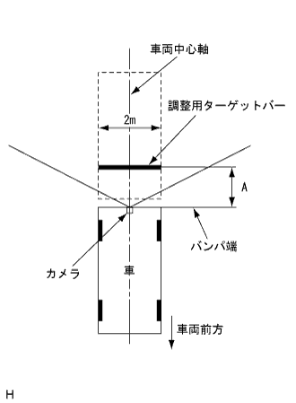
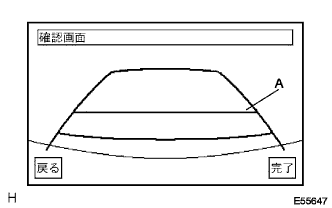

Diagnothis code inspection (the point is reference)
reference)
Service inspection (the point isreference)
- □ Participation □
- Check the connection status of each ECU and the output of the diag code.
Back Guide Monitor System Diasground System |
If the steering wheel is cut to the left and right sides to the full side, and the rudder angle exceeds the maximum ruddered specification value of 15.0 ° or more, the steering angle is corrected.
If the screen is displayed on the screen due to a removal of the battery terminal, a connector removal of a steering sensor, etc., "System Initialization" is displayed, and one of the following operations is performed to correct the shift of the rudder angle neutral point.
Method 1: Cut the steering wheels on both sides of the left and right sides to correct the steering angle.
Method 2: Driving as much as possible, curve, and less traffic congestion, and drive for more than 20 km/h or more for 5 minutes.Then stop the vehicle and check whether the neutral point has been learned.If you are not learning, run again.(Judging a straight state and learning the neutral point)
Display due to causes other than shift of the rudder angle neutral
If the mounting angle of the steering wheel is shifted, when the steering wheel is straight, the width extension and the expected course shift.
When the camera optical axis adjustment is not correctly adjusted, the width extension and the expected course shift.
Diagnothis code inspection (the point isreference)
Service inspection (the point isreference)
|  |
Preparation before adjustment
Stop the vehicle with the steering wheel straight.
Install the adjustment target bar at the position of the figure.(Only when adjusting the camera optical axis)
 |
Diag activation
Start the engine.
Start diagnostic.(The point isreference)
Select "Camera Inspection" on the diagram test menu screen.
 |
Red angle adjustment
Confirm that the steering wheel is in a position where the vehicle goes straight (almost ± 5 degrees or less), and press "Red angle in the steering angle".
After remembering the steering angle, turn the steering to the left and press the "maximum steering angle memory".Similarly, turn the right to the right and press "Maximum Hudtual Memory".At the time of being pushed, the left and right rudder angle memory is made.
 |
Camera optical axis adjustment
Press the rotating switch A and B to rotate C so that it is parallel to the adjustment target bar.
Press up, down, left and right switches to move C up, down, left and right, so that the target bar for adjustment is entered the center of D.
Select "Next"
|  |
A (indicates [1210mm] from the bumper edge) and confirm that the adjustment target bar is almost overlapped.Also, when the steering is straight, confirm that the expected course is straight (overlapped with the extension of the vehicle width).
Select completion, return to the diag test menu and finish adjustment.
Adjustment confirmation
When the maximum rudder angle memory is performed, the screen is confirmed on the screen that the predictable course is linked to the end of the steering wheel after the diag test is completed.